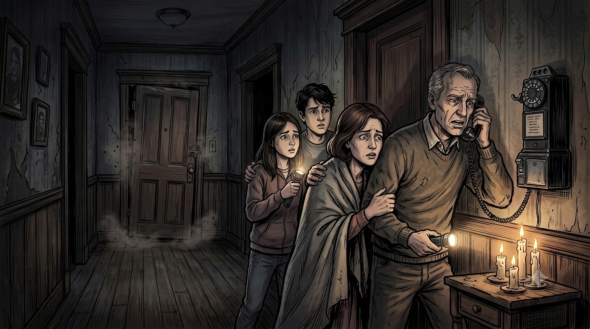
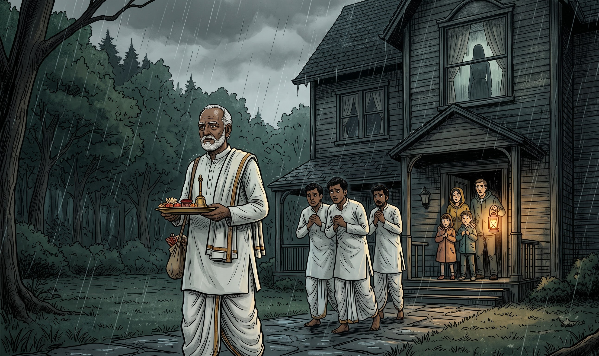
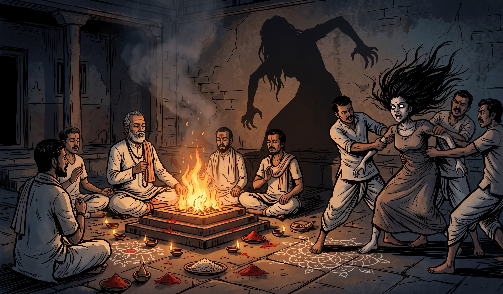
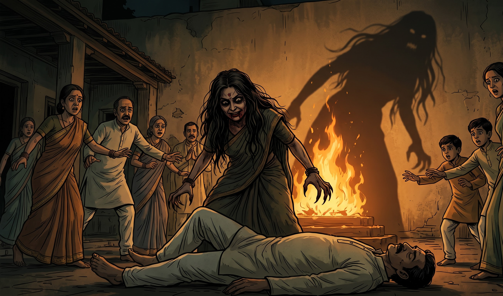

Parivaar ne turant landline se call kiya aur ek pujari ko bulaya. Us pandit ne apne guru, kai saalon se tantr-mantr aur adhyatmik saadhna karne wale ek anubhavi pujari Pandit Shankar Joshi ko bulaya, jo kaafi kasbe door rehte the. Subah hone se pehle hi Pandit Shankar ghar pahunch gaye. Jaise hi unhone ghar ke andar kadam rakha, Maya band kamre ke darwaze par zor-zor se haath maarne lagi.
“Main tum sabko maar daalungi! Main tumhara khoon pee jaungi!”
Awaaz ek aurat ki thi, lekin woh Maya ke sharir se aa rahi thi.

Pandit Shankar samajh gaye ki yeh koi saamanya maamla nahi tha. Unhone parivaar ko ek shaktishaali anushthaan ki taiyaari karne ko kaha aur apne kuch shishyon ko bhi bulaya. Beech ke aangan mein pavitra agni jalaayi gayi aur mantrochchaar shuru hua. Jaise-jaise mantrochchaar tez hota gaya, Maya ki cheekhein aur bhi bhayankar hoti gayi.
Aakhir Pandit Shankar band kamre ke bahar khade hue aur poocha, “Tum kaun ho?”
Kuch pal tak koi jawab nahi aaya.
Phir darwaza zor-zor se hilne laga.
Andar se ek aurat ki awaaz cheekhi, “Main tum sabko kaat daalungi. Main tumhara khoon pee jaungi.”
Pandit Shankar shaant rahe. Unhone poocha, “Tum chahti kya ho?”
Awaaz aayi, “Mujhe woh ladki chahiye. Main ise apne saath le jaungi.”
Pandit Shankar ko samajh aa gaya ki koi buri aatma Maya ke sharir ko apne vaahan ki tarah istemaal kar rahi thi. Unhone parivaar ko bataya ki yeh ek purani sthaniya dantkatha se judi shakti thi—ek andhi chudail, jiske baare mein kaha jaata tha ki kai dashak pehle woh is ilaake mein logon ko daraati thi. Woh dekh nahi sakti thi. Sirf awaaz ka peecha kar sakti thi. Aur use khoon ki bhook thi.
Tabhi darwaze ke neeche se ek haath bahar nikla aur Pandit Shankar ka takhna pakad liya.
Uski ungliyan asamaanya roop se lambi thi. Chamdi kaali aur jhurriyon se bhari thi, aur naakhun itne lambe the ki woh kisi insaan ke nahi lag rahe the. Pandit Shankar ghaayal hue, lekin unhone anushthaan nahi roka.
Shaam hone lagi. Mantrochchaar aur tez hota gaya. Maya kabhi cheekhti, kabhi roti, kabhi parivaar ko dhamkaati aur kabhi darwaza kholne ke liye gidgidaati.
Phir ek bhayanak dhamaaka hua.
Chhat ki taraf jaane wala darwaza toot chuka tha.
Parivaar samajh gaya ki Maya bhaag chuki hai.
Kuch hi pal baad woh chhat par dikhai di.
Phir usne chhalang laga di.
Uska sharir zameen se zor se takraya, lekin kuch hi pal baad woh dheere-dheere uthne lagi. Uski haddiyan chatakhne lagi, haath-pair aswaabhavik tareeke se mud gaye aur uska sir ek namumkin kone par jhuk gaya.
Phir woh parivaar ki taraf daud padi.
Woh seedhe Pandit Shankar ki taraf badhi, lekin pavitra anushthaan ke ghere ke paas pahunchte hi achanak ruk gayi. Pandit Shankar mantrochchaar karte rahe, jabki unke shishyon ne Maya ko chaaron taraf se gher liya. Kai logon ne use pakadne ki koshish ki, lekin Maya mein insaan se pare taakat thi. Woh jawaan aadmiyon ko bhi aasaani se door phek rahi thi.
Aakhirkaar ve Maya ko chaawal aur sindoor se banaye gaye pavitra ghere ke andar kheench laaye.
Jaise hi Maya ghere ke andar gayi, woh behosh hokar gir padi.
Sabne rahat ki saans li.

Lekin khauf abhi khatam nahi hua tha.
Bahar ke aangan se achanak ek cheekh sunai di.
Maya ki chachi apne pati ke upar khadi thi. Uske baal khule hue the. Uski aankhen poori tarah khuli hui thi. Aur uske muh par khoon laga tha. Chudail ab uske andar ja chuki thi.
Usne apne pati par hamla kar diya. Uske lambe, aswaabhavik naakhunon ne uski gardan par gehri kharonchein daal di aur woh uske ghaavon se nikalta khoon chaatne lagi. Pandit Shankar ke shishyon ne turant use pakad liya. Kuch hi der baad woh bhi behosh hokar gir padi.
Parivaar ko laga ki aatma ne Maya ko chhod diya hai.
Maya abhi bhi pavitra ghere ke andar behosh thi.
Raat ke aakhri pehar Arjun apni behen ko dekhne gaya. Maya hosh mein thi. Uski aankhon mein aansu the.
“Arjun... mere saath kya ho raha hai?”
Uski awaaz bilkul saamanya thi. Uski aankhen bhi saamanya thi. Kai dinon mein pehli baar woh bilkul apni purani Maya jaisi lag rahi thi.
Arjun ne use kas kar gale laga liya. “Dar mat. Main yahin hoon. Sab khatam ho gaya.”

Tabhi Arjun ki nazar gallery ki taraf gayi. Wahan ek bahut badi parchai hil rahi thi. Ek aurat ki parchai. Lekin wahan koi aurat khadi nahi thi. Parchai dheere-dheere unki taraf badhne lagi.
Arjun wahi jam gaya.
Maya ne dheere se uske kaan ke paas kaha, “Tum mujhe dhoondh rahe the?”
Arjun ne uski taraf dekha. Uski muskaan badal chuki thi. Chudail wapas aa gayi thi. Asal mein, woh kabhi gayi hi nahi thi.
Maya ne Arjun par hamla kar diya. Uske naakhun Arjun ki chamdi mein dhans gaye, lekin Arjun ne use nahi chhoda. Maya ki taakat lagataar badhti ja rahi thi, phir bhi Arjun apni behen ko pakde raha.
Pandit Shankar mantrochchaar karte rahe. Unke shishya Arjun ki taraf daude aur Maya ke chaaron taraf ek aur pavitra ghera bana diya. Kai log use kaabu mein karne ki koshish karte rahe, lekin Maya ne kuch logon ko door phek diya. Arjun ne phir bhi use nahi chhoda.
Aakhir Pandit Shankar pavitra agni ke paas gaye aur wahan se pavitra bhasm uthakar Maya ke sir par laga di.
Maya ne ek bhayanak cheekh maari. Uska poora sharir buri tarah kaanpne laga. Phir woh behosh hokar gir gayi. Is baar woh bilkul shaant thi.
Pandit Shankar ne parivaar ko bataya ki woh aatma bahut shaktishaali thi. Agar Maya us ghar se bahar nikal jaati, toh shayad parivaar use dobara kabhi nahi dhoondh paata. Unhone yeh bhi bataya ki kai dashak pehle isi ilaake mein ek aisi hi andhi chudail ke logon ko maarne ki kahaniyaan sunne ko milti thi.
Arjun ke saahas ne Maya ki jaan bacha li thi.
Lekin anushthaan abhi poora nahi hua tha.
Subah kareeb chaar baje Maya ko aangan ke beech doodh aur Ganga jal ke mishran se snaan karaya gaya. Use saaf kapde pehnaye gaye aur sula diya gaya. Pandit Shankar poori raat ghar mein rahe aur parivaar ko use surakshit rakhne ke nirdesh diye.
Dopahar tak Maya ne aankhen kholi. Woh phir se khud thi. Uski aankhen saamanya thi. Uski awaaz saamanya thi. Woh ajeeb maujoodgi ja chuki thi.
Ghanton tak cheekhne ki वजह se uska gala buri tarah zakhmi ho gaya tha, lekin woh zinda thi. Pandit Shankar ne uski kalaiyon aur takhnon par raksha ke pavitra dhaage baandhe aur chetavani di ki unhe chhe mahine tak nahi utaarna hai. Jaane se pehle unhone poore ghar aur uski seemaon ko aashirvaad diya.

Chudail chali gayi thi. Lekin woh gayi kahan? Kisi ko nahi pata.
Maya dheere-dheere poori tarah theek ho gayi, haalaanki us raat ka sadma kai mahino tak uske saath raha. Saal beet gaye aur woh ek saamanya zindagi jeene lagi. Parivaar ne bhi dheere-dheere us raat ke baare mein baat karna band kar diya.
Lekin ek baat woh kabhi nahi bhool sake.
Maya saalon se andhi hone ka mazaak karti aa rahi thi. Lekin 1996 ki amavasya ki us raat, woh sach mein andhi ho gayi thi. Aur jo aatma uske sharir mein aayi thi, woh achhi tarah jaanti thi ki us andhepan ka istemaal kaise karna hai.
Woh dekh nahi sakti thi. Woh sirf sun sakti thi.
Aur Brookline ke un andhere, ghane jangalon ke paar, shayad woh andhi chudail aaj bhi raat ke sannate mein bhatak rahi hai... Kisi aur insaani awaaz ko sunne ka intezaar kar rahi hai.
Bas is intezaar mein... ki koi usse jawab de.
← Back to Hinglish Tales